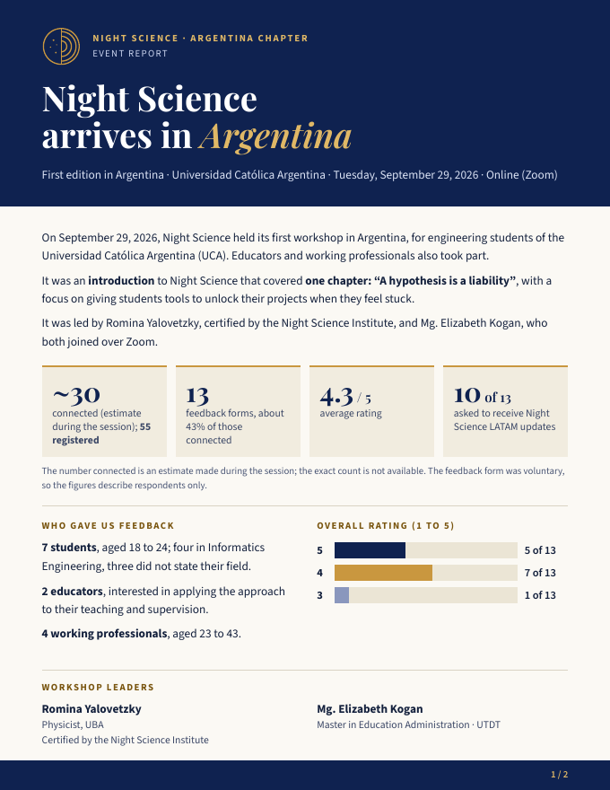

Argentina Chapter
Night Science arrives in Argentina
Workshops on the stage of research that nobody formally teaches: creativity and exploratory scientific thinking.

The initiative
Night Science is an approach to the exploratory side of science: how ideas emerge, how to unlock a stuck project, and how to live with doubt while doing research. Night Science Argentina brings these tools to students, educators and professionals in the country.
Our first edition took place on September 29, 2026 at the Universidad Católica Argentina (UCA), online via Zoom, with a workshop built around a single chapter: “A hypothesis is a liability”.
Contact
Would you like to bring the workshop to your university, organization or team? Get in touch.
First edition report
Two pages with the workshop results, what participants valued most, and their own words.
- ~30connected (estimate) out of 55 registered
- 13feedback forms
- 4.3 / 5average rating
- 10 of 13asked to receive Night Science LATAM updates
The feedback form was voluntary, so the figures describe respondents only.
In their words
“The way it was explained how a hypothesis can bias us about progress, seeing only the end and not the stumbles.”Student
“Understanding that the research process should be enjoyed, and that we must accept doubts, let a hypothesis fail and step back.”Student
“I liked the real-case examples and that it connects with my field of study.”Informatics Engineering student
“Learning the current state of this approach to research methodology, for eventual thesis-advising work.”Educator
Translated from the original Spanish.
Workshop leaders
Romina Yalovetzky
BSc in Physics, Universidad de Buenos Aires (UBA). Certified by the Night Science Institute.
Researcher in quantum computing and machine learning at JPMorgan Chase in New York, and a master’s student in Computer Science at NYU. More than 10 years of experience in science and technology.
Mg. Elizabeth Kogan
Master in Education Administration, UTDT. Licentiate and Professor in Education Sciences, UCA.
Specialist in Nonprofit Organization Management (UTDT, UDESA, CEDES). Former academic secretary and postgraduate coordinator, and advisor to the Teacher Training Directorate of the Buenos Aires City Ministry of Education.
Night Science Institute
The Night Science Institute grew out of an initiative by two scientists, with the aim of transforming scientific culture by teaching and promoting the creative process in research. Since 2021 the workshop has been held at more than 30 institutions with at least one facilitator certified by the Institute; Argentina is a first.
Itai Yanai, PhD
Co-founder of the Night Science Institute. Professor of Biochemistry at New York University’s medical school.
Martin Lercher, PhD
Co-founder of the Night Science Institute. Professor of computational cell biology at Heinrich Heine University Düsseldorf, Germany.
Oliver Bogler, PhD
CEO of the Night Science Institute in New York.